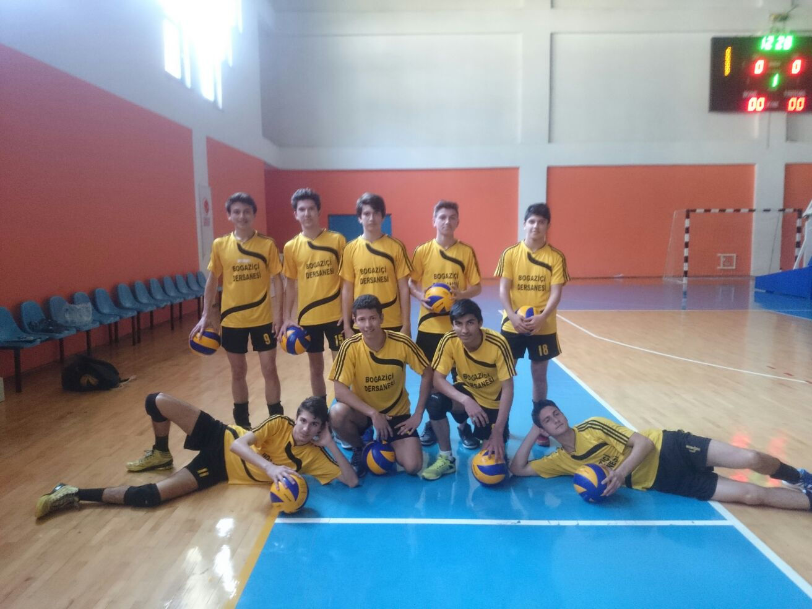
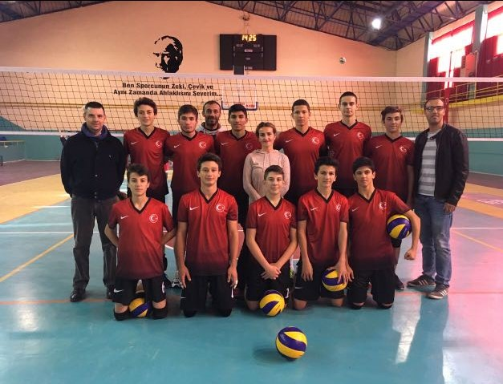
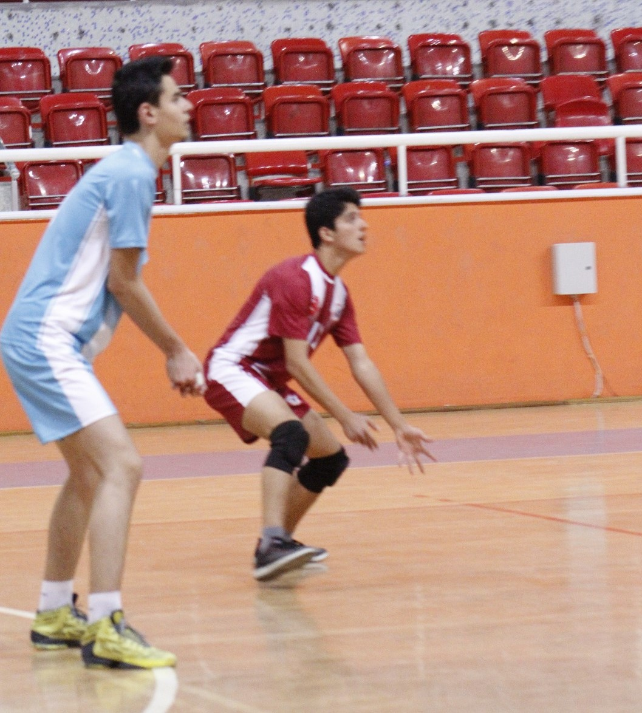
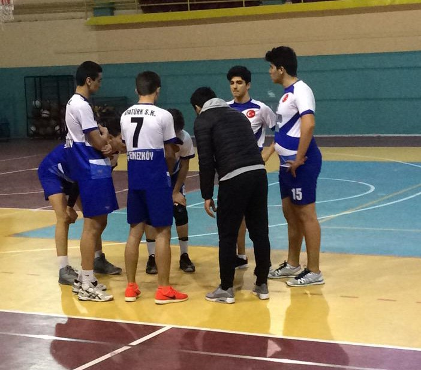
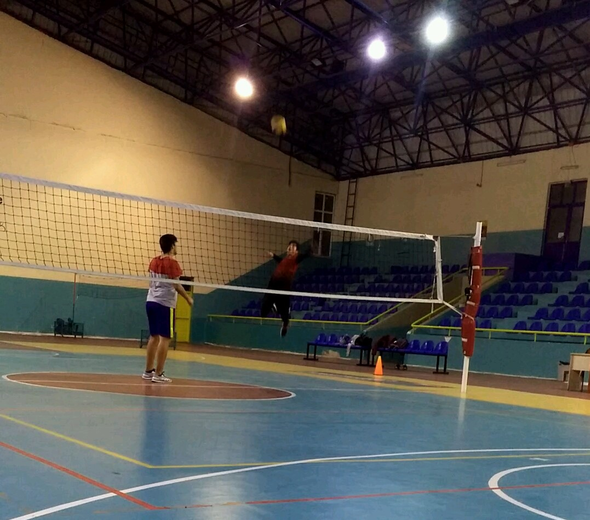
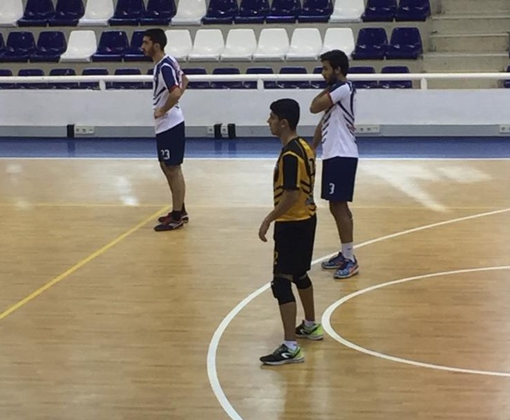

When I was in the 7th grade, one of my physical education teacher took me to school volleyball team as a setter. We train very well with team. I liked playing volleyball for the first time in this team.
I was not a chatty person in high school. When I was first grader, I always play volleyball at the schoolyard. Then, a physical education teacher saw me while playing volleyball. He invited me to school volleyball team as a hitter and I accepted. In this way, a 4-year period started.
We were developing ourselves for every years. First year, we were not quite well but we always focused on being a better team. We tried to get hours from the sport halls, did a lot of training.
As I mentioned above, first, I played as a setter at secondary school. Then, I played as a hitter at first grade in high school. Last of all, my defense was good and we had good spikers. Because of this situation, I also played as a libero in high school volleyball team.
When I was in third grade, I joined a club namely Atatürk Sports Club which has a good volleyball team. I played there for a year. It was the year that made the best contribution to my volleyball development.
 After high school, I went to university and I joined the engineering faculty volleyball team of my university. Now I'm playing as a setter, spiker or libero according to the needs of the team.
You can click the links below for details about my sport experiences or return to start of the journey.
Start of The Journey